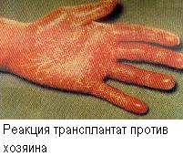
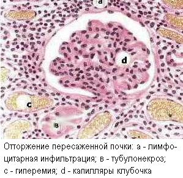

Реакции отторжения трансплантата ("реципиент против трансплантата")
С тех пор, как А.Каррель получил Нобелевскую премию за хирургический шов, позволяющий соединять при трансплантации кровеносные сосуды (1912), трансплантология прошла большой путь. Пересадка кожи, роговицы, костной ткани, переливание крови стали рутинными процедурами. Пересадка почек вошла в широкую клиническую практику. С возрастающим успехом в крупных медицинских центрах пересаживают костный мозг, печень, лёгкие, сердце и комплексы этих органов, участки кишечника, островки поджелудочной железы, и в 1990 г. усилия трансплантологов вновь удостоились Нобелевской премии (Дж. Муррей, Э. Доннэл-Томас). Главной проблемой на пути трансплантологии остаётся иммунологическая несовместимость аллотрансплантатов (от другого представителя того же вида) и ксенотрансплантатов (от представителя иного вида) с организмом хозяина. Единственный путь обойти этот барьер - изотрансплантаты (от однояйцевых близнецов и клонированных особей) и аутотрансплантаты (от самого индивида). Для других случаев приходится прибегать к антигенному подбору доноров и к иммуносупрессивной терапии. Первый в мире человек с пересаженным сердцем - Луис Вашканский - умер именно в результате ятрогенного иммунодефицита. Несмотря на воодушевление, вызванное появлением новых, более селективных в отношении трансплантационного иммунитета иммуносупрессоров - грибковых макролидных антибиотиков (циклоспорины, FK506, рапамицин) проблема иммунологического конфликта трансплантата и реципиента еще не решена.Антигенный набор индивида, прежде всего, уникален своими белками ГКГС. Антигены ГКГС 1-го класса локусов А, В и С присутствуют на всех ядерных клетках, а локуса G - лишь на трофобласте. Эти антигены, как уже описано выше, распознаются цитотоксическими лимфоцитами CD8-популяции. В дополнение к этому, на антигенпредставляющих, лимфоидных, макрофагальных и эндотелиальных клетках экспрессированы антигены ГКГС 2-го класса локусов DR,DP, DQ. Они распознаются CD4-лимфоцитами.
На безъядерных клетках крови, в частности, эритроцитах, имеются антигены систем АВО, Rh, MNS - которые тоже вносят вклад в иммунологическую дисгармонию хозяина и трансплантата, тем более, что АВО, например, экспрессируются и в почках. Даже при идентичности по всем этим антигенам трансплантаты могут приживляться плохо, что убеждает в существовании дополнительных, доселе не открытых трансплантационных антигенов человека.

Набор антигенов ГКГС наследуется кодоминантно. Ядерная клетка индивида имеет 8 антигенов, по 4 от каждого родителя. Всем локусам ГКГС свойственен множественный аллелизм (в популяциях человека встречаются не менее 20 генов для локуса А, 40 - для В, 10 - для С, более 40 - для D). Гены наследуются группой в 6-й хромосоме (принцип гаплотипа). Таким образом, при очень малой вероятности совпадений между неродственниками, у кровных родственников близость по гаплотипу ГКГС возможна с высокой вероятностью.Трансплантат приживляется, только если все его антигены ГКГС присутствуют у реципиента, в противном случае возникает реакция отторжения, пропорциональная по интенсивности степени антигенных различий. Исключением из этого правила является реакция “трансплантат против хозяина” (РТПХ). При РТПХ имеется иммуноактивный трансплантат, содержащий Т-клетки, которые, в силу близости к собственным клеткам хозяина или из-за его иммунодефицитности, не отторгаются реципиентом, а предпринимают агрессию против хозяйских клеток. Типичным примером РТПХ служит поражение кишечника, печени, кожи и почек у лиц с пересадками костного мозга. Многие черты, напоминающие РТПХ, имеет нефропатия при токсикозе второй половины беременности. РТПХ напоминает по клинике мультиорганный аутоиммунный процесс, с некрозами во многих органах и исходом в интерстициальный фиброз.
При отторжении трансплантата наблюдается как гуморальный, так и клеточный иммунный ответ. Трансплантаты могут отторгаться в первые сутки (см. выше), причем в сверхостром отторжении (за минуты и часы) решающую роль играют реакции немедленной гиперчувствительности. Предсуществующие антитела к антигенам трансплантата могут провоцировать цитотоксическую и иммунокомплексную реакцию против антигенов сосудов трансплантата, что ведёт к васкулиту и ишемическому некрозу трансплантата. При остром отторжении предсуществующих антител нет, но иммуноглобулины появляются после сенсибилизации и направлены против паренхиматозных клеток трансплантата, обусловливая их некроз. Начало острого отторжения может быть отложено на несколько недель или даже на месяцы. Но начавшись, процесс заканчивается за несколько дней.Если отторжение происходит в сроки от нескольких недель до нескольких месяцев - то важнейшую роль при таком подостром и хроническом отторжении играют реакции клеточного иммунитета. Решающее действие оказывают Т-лимфоциты, постоянно рециркулирующие с кровью через лимфоузлы. Они сенсибилизируются в месте приживления трансплантата при участии АПК самого донора (пассажирских клеток), с которыми взаимодействуют, несмотря на несингенность; оттуда по лимфатическим и кровеносным путям попадают в лимфоузлы, где из них образуется клон эффекторных клеток, которые - через выносящий лимфатический сосуд - проникают в кровоток, направляются к трансплантату и оказывают повреждающее действие на его клетки. При отторжении активны CD4 - положительные цитотоксические клетки, чья роль более значительна, чем CD8 - киллеров.
Помимо клеточного иммунитета определенную роль в хроническом отторжении трансплантата также играют и иммуноглобулины. В реакции отторжения принимают участие специфические антитела к антигенам трансплантата. Эти антитела обладают цитотоксической активностью и вызывают антителозависимую клеточную цитотоксичность (АЗКЦ).
Последовательность явлений при отторжении трансплантата изучена, в основном, на модели аллотрансплантации кожи.
После пяти-шестидневного латентного периода вокруг трансплантата возникают воспалительные процессы, которые и вызывают его отторжение на 7-12 день после первичной пересадки (отторжение по первичному типу). Если реципиенту повторно пересадить трансплантат от того же донора, то отторжение произойдет быстрее - по вторичному типу (“белое отторжение” - в этом случае васкуляризация трансплантата бывает скудной и латентный период отсутствует).
При первичном отторжении трансплантата различают три фазы гистологических изменений:
1) приживление трансплантата приблизительно к 5 дню после трансплантации. 3Н-тимидиновый индекс клеток трансплантата колеблется в пределах 5% от контрольных значений. В этой фазе нет различий в приживлении ксено- и аллотрансплантатов.
2) начиная приблизительно с 8-го дня, достигается полная васкуляризация трансплантата. В эпителии кожного трансплантата появляется вакуольная дегенерация, под эпителием располагаются очаги инфильтрации, состоящие из лимфоцитов и гранулоцитов, которые начинают иммигрировать уже в конце первой фазы). 3Н-тимидиновый индекс составляет около 12%.
3) приблизительно с 11 дня воспаление усиливается: увеличивается клеточная инфильтрация и разрастание мелких сосудов, усиливается некротизация эпителиальных разрастаний у основания трансплантата (3Н-тимидиновый индекс равен 0), усиливается пролиферация тканей хозяина (их 3Н-тимидиновый индекс 50-60%).
При отторжении по первичному типу участвуют в основном мононуклеары и лишь немного полиморфноядерных гранулоцитов, при отторжении по вторичному типу в качестве эффекторов выступают и мононуклеары, и полиморфноядерные гранулоциты (активированные лимфокинами ГЗТ). Наиболее активны, как стимуляторы отторжения, ФНО и ИФНg, которые не только угнетают жизнедеятельность клеток трансплантата и активируют эффекторы цитотоксичности, но и усиливают экспрессию трансплантационных антигенов на клетках, вовлекая цитотоксические эффекторы.
|
|
|
|
|
|